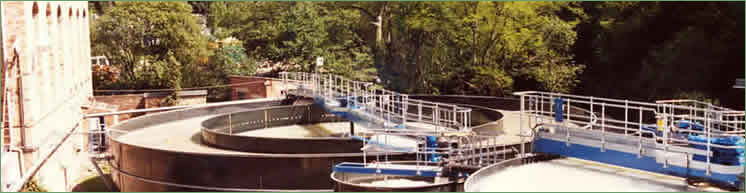

River Pollution
 |
  River Pollution
River PollutionOriginally, rags were the main source of cellulose fibre used to make paper on the North Esk and the effluent from washing and bleaching the rags was discharged straight into the river. |
|||
| Initially the tonnage of paper produced was very small when the paper was hand-made. With the introduction of papermaking machines in the early 1800s, the tonnage greatly increased resulting in complaints from landowners about the pollution of the river. Local landowners brought an action against the Papermakers in 1841 requiring them to restore the river’s cleanliness. After a period of slight improvement, the replacement of rags by Esparto grass, which had to be boiled with caustic soda, resulted in very severe pollution, and the case came to trial in 1866. The Papermakers lost the case and anti-pollution measures had to be put in place. These consisted of soda recovery systems, lime settling ponds, fibre filtration and settling plants, and although these measures helped, the river remained in a terrible state until Esparto pulping ceased at the mills in the 1960s. The defence given by the Papermakers throughout the years of pressure from the various Authorities in charge of River Purification, was that the huge expense involved in solving the problem would result in the closing of the mills. However, latterly, there were alternative sources of ready-pulped fibre available which could have replaced Esparto, and allowed the shut down of the offending on-site pulp plants. The effluent from the papermaking process was not as severe a problem as the caustic from the Esparto pulp plants, but as production volumes rose, then these discharges also started to cause severe pollution problems in the river. To try to improve their effluent, the Mills were forced to construct large settling ponds where the fibrous and mineral suspended solids were deposited by gravity due to the slow flow through the pond. The clarified liquid was then discharged into the river, and when after some weeks, the deposited solids reached too high a level, the inflow was switched to an empty pond, and the solids in the full one were left to dry off before being dug out and carted to a tip. The effluent from Esk Mill was carried by narrow concrete troughs that ran along the left bank of the river to the flat area where the current Council sewage treatment plant is situated. Upriver from the plant, the wooded slopes which border the pathway, where the old railway used to be, are formed by the remains of two of these tips. Valleyfield had similar settling ponds, which were superseded in the fifties by the installation of two Clariflocculators – the first modern solution to the pollution problem on the river. These were large diameter concrete tanks where the effluent was dosed with chemicals to flocculate the suspended solids, and fed in through a central distributer, where as it flowed outwards, the aggregated solids sank to the bottom, and the clear liquid flowed out to a channel at the edge of the tank and was discharged into the river. The solids were pumped out the bottom, passed over a meshed drum for drying and sent to the tip. The latter was an area upstream from Valleyfield on Penicuik Estate, and in recent times has caused major problems with landslips. However, increased production from new coating equipment, and the new paper machine at Pomathorn, meant that the design capacity of the new clarifiers was exceeded by the increased effluent, even after the Esparto plant was shut in the late 1960’s. Dalmore’s effluent treatment mirrored the developments made by the other mills, and in 1960, they installed a Clariflocculator similar to those of Valleyfield. Latterly, in response to further pressure to improve the effluent quality, a Biological treatment plant was built to re-oxygenate the clarified effluent and ensure that the river could sustain life. Esk Mill had conducted experimental trials with a similar system in the early 1960’s. The condition of the water in the River Esk has been the subject of a long struggle between the River Authorities trying to improve it, and the Mill owners trying to minimise the costs of doing so. When the Mills began to struggle financially for their very existence in the 1960’s, they used this, understandably, as an excuse to avoid spending on new treatment equipment, but it has to be said that the river was in a shocking state. It also should be said that, by the mid 60’s, Dorr - Oliver Polydisc Savealls were available to the industry. These could filter backwater from the paper machines to such a clarity that this water could replace the huge volumes of freshwater that was used on wire sprays, etc. The benefit of this would have been the great reduction in the volume of effluent going to the Clariflocculators, greatly improving their efficiency, and this in turn would have greatly reduced the suspended solids entering the river. The other benefit would have been the return of large quantities of valuable fibre and filler to the paper machine system, rather than its loss to the drain. In short, the Mills would have saved money by the purchase of this equipment, and minimised the pollution in the river. | |||


Penicuik Historical Society :: Penicuik Town Hall :: 33 High Street :: Penicuik :: EH26 8HS
e-mail :: info@penicuikpapermaking.org
e-mail :: info@penicuikpapermaking.org
© Penicuik Historical Society :: site by Wallace Web Design